Project Journal: January 21, 2019
The playoffs are coming to an end, and it should be Patriots - Saints in the Super Bowl, but it will be a just-as-exciting Patriots - Rams rematch, due to the no-call pass inteference. Fortunately, college basketball is in full swing to bridge the gap after the NFL season ends.
Speaking of championships, I am feeling like a champion after completing all three of my "Two Week Version" projects.
Next up: Four Week Versions
I have gained momentum on all three projects, already starting to work on features that will be included in the next two weeks (i.e. Four Week Versions). As a reset, here are the Four Week Version project visions (you can click on the project name to see it in action on codesandbox):
et130webapp
- Next Tasks
- What is the next most annoying task to do manually?
- Wait until problem from desired topic is randomly generated
- What is the next most annoying task to do manually?
- Hide the answer before attempting the problem
- What is the next most annoying task to do manually?
- Keeping track of their performance on the problems
- Core Functionality
- Students can generate new problems, view the answer when they desire to do so, and track their perfomance for each topic
I have updated my Trello board accordingly.
ThoughtBoard
- Next Tasks
- What is the next most annoying task to do manually?
- Keep track of old categories after assigning new categories (i.e. user should be able to add "subcategories")
- What is the next most annoying task to do manually?
- Process/analyze thought groups from a linear list
- What is the next most annoying task to do manually?
- Keeping track of their performance on the problems
- Core Functionality
- User can add thoughts to the screen, assign categories to them, and view them in groups by category
Here's the updated Trello board.
FeelsTracker
- Next Tasks
- What is the next most annoying task to do manually?
- Select an emotion from a dropdown with 32 options
- What is the next most annoying task to do manually?
- Process and summarize a bulleted list of emotional records
- Core Functionality
- Users can select an emotion based on the logic of the Plutchik's Wheel, record it, and later view their emotional history both textually and visually
I pushed forward freely on this project, focusing moreso on the visual elements than the other two. I think it's appropriate that the app which will have the most user interaction by click/touch should now be visually planned. I ended up learning quite a bit about the fundamentals of static file serving, as well as the inner workings of Plutchik's Wheel of Emotions, which inspired this project initially.
The node server serves to everyone
I was running into the following issue---when referencing JS code in an external file, Pug allows you to include the script as plain text, which I was doing as follows:
script.
include ../path/to/ExternalFile.js
and also allows you to reference the script by link, which I was doing as follows:
script(src="../path/to/ExternalFile.js")
On the server, Express allows you to serve static files using the express.static() middleware. Which is awesome, and I initially
used, but without desired or expected results.
My template could successfully include the external path when I gave it the relative path, but
received a 404 when using the same path in the src attribute. Why?
As it turns out, I had not thoroughly read Express' documentation on the static middleware, which clearly states:
Express looks up the files relative to the static directory, so the name of the static directory is not part of the URL.
I used script(src="ExternalFile.js") and we were back in business! In between identifying the problem and implementing the solution,
I came across some key ideas that in hindsight seem trivial:
- The Node server serves files to everyone, including the browser, which looks to the Node server when loading files (wait for it) that are on the server
- The "Network" tab in Chrome's Dev Tools is very useful when you need to see details about (wait for it) what and how Chrome is loading a page
- You can't
requiremodules (such as jQuery) on client-side scripts, but you can use modules (such as jQuery) when youlinkthem before linking your scripts in your html file
Planning user interactions visually
Unlike the other two projects, the FeelsTracker very quickly required some kind of DOM manipulation since I wanted something more interesting than a dropdown. There was certain logic in the user's selection of emotions that I wanted to restrict and convey visually, so I started by creating some visual concepts in Google Slides, first with some nice intersecting circles:
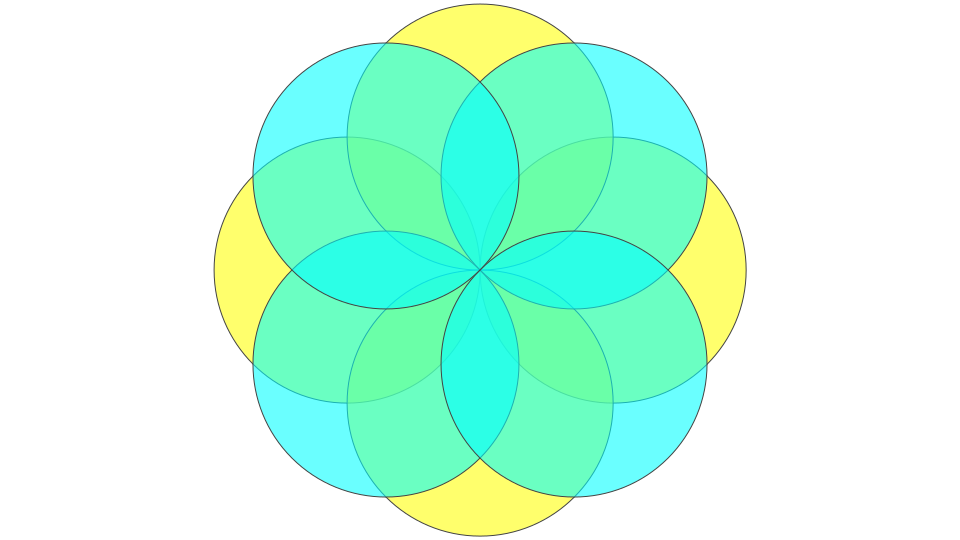
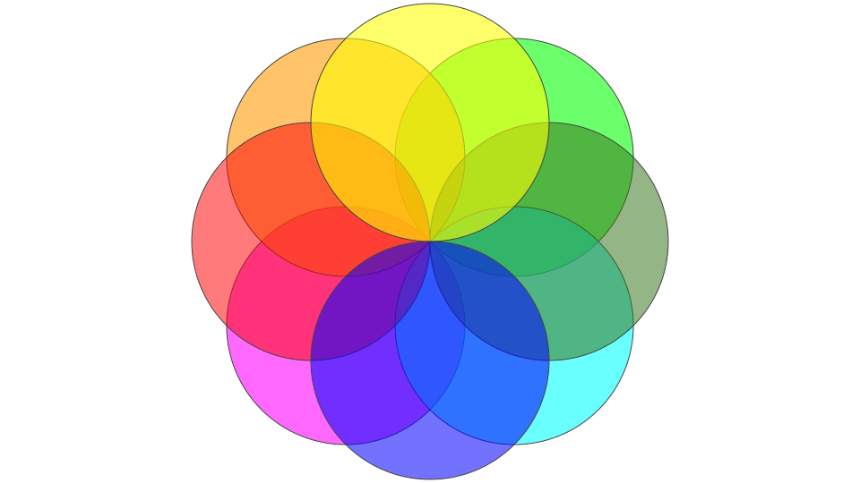
At that point, I felt this was too convoluded, or vague, so I created some more literal representations of Plutchik's Wheel of Emotions, starting with a "cross" shape, an octagon, and the combination of the two:
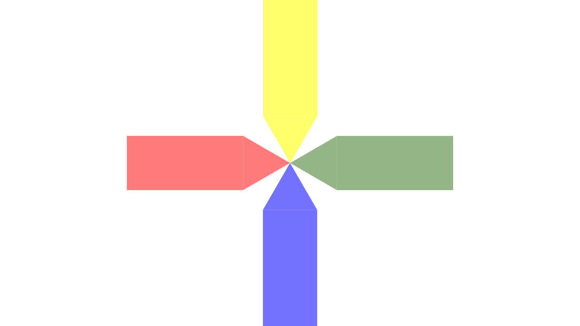
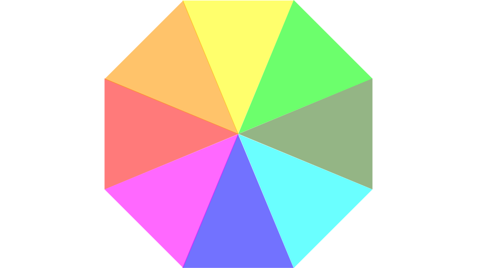
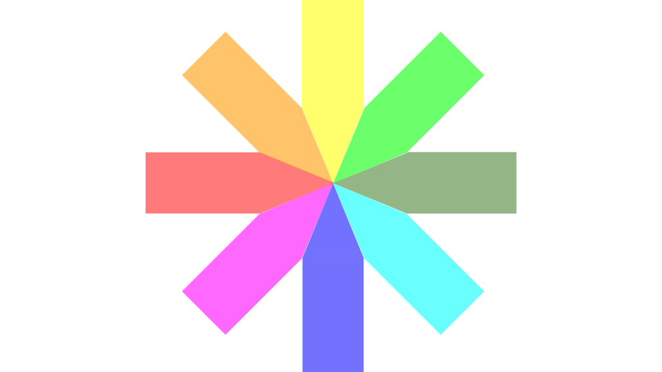
I loved the octagon, since I'm a fan of regular polygons, but the combination of that with the "cross" resulted in something that too closely resembled an ambulance symbol a.k.a. "Star of Life". So I revisited the intersecting circles, but this time without borders to reduce the number of intersecting lines:
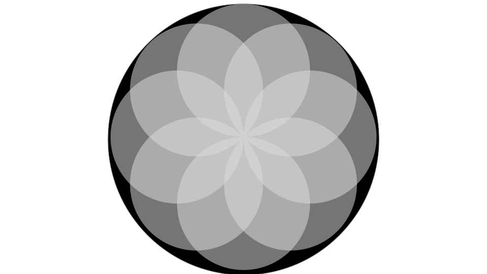
I think that helped significantly, as this was much easier on the eyes, and clearer to see the overlaps of circles (i.e. emotions). I tried to strip away some of the shapes again, resulting in this flower pattern:
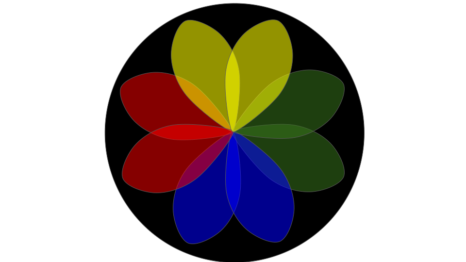
I was liking it, so I added some text to start making it concrete:
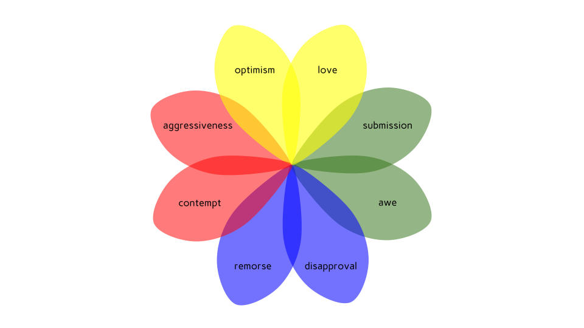
I experimented with some different color combinations:
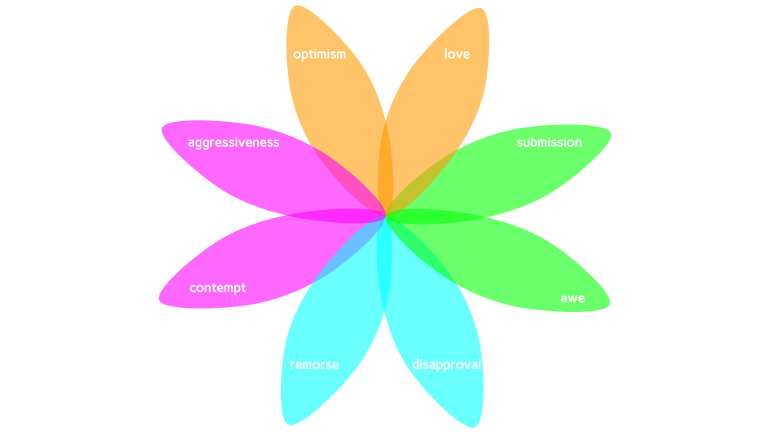
Unfortunately, even though I loved those colors individually, putting them together in that flower arrangement made it look like something you would see on a prescription drug pamphlet hanging on the wall of the waiting lounge in a clinic. I thought "maybe toning down the color intensity will make it look less nauseous":
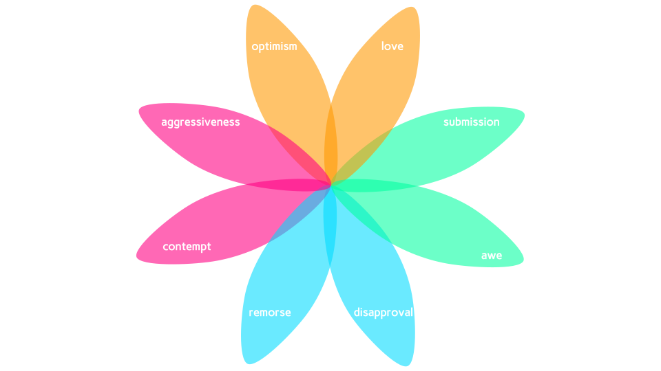
Nope, still nauseous. "Maybe the petals are too slender, and wider petals will look more pleasant/cuter?"
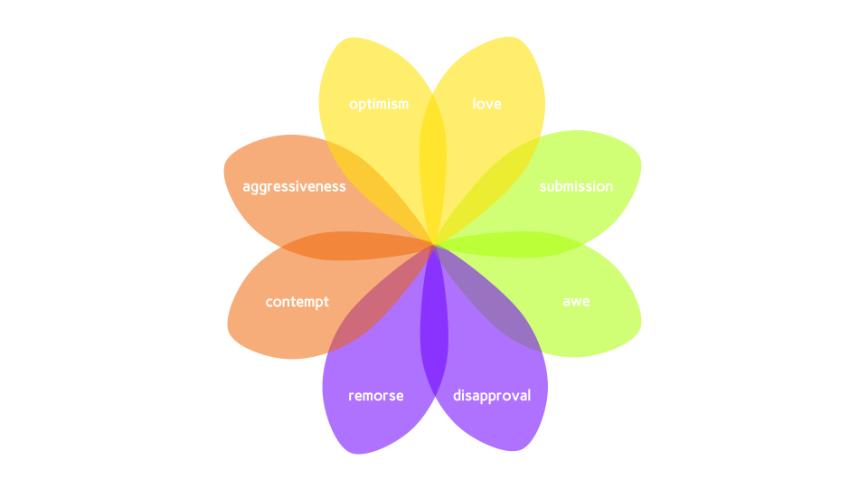
Ugh, no such luck. This was the most nauseating of them all. I turned to experimenting with more color combinations:
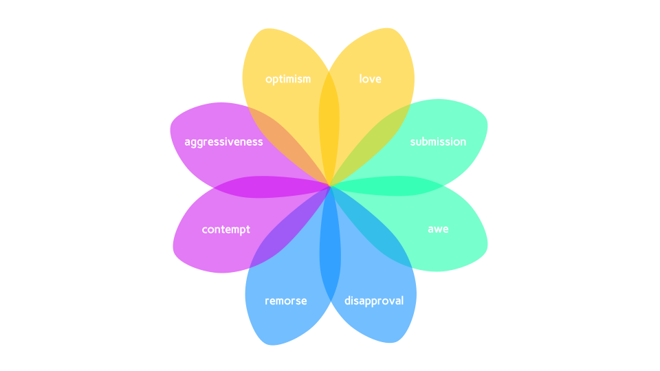
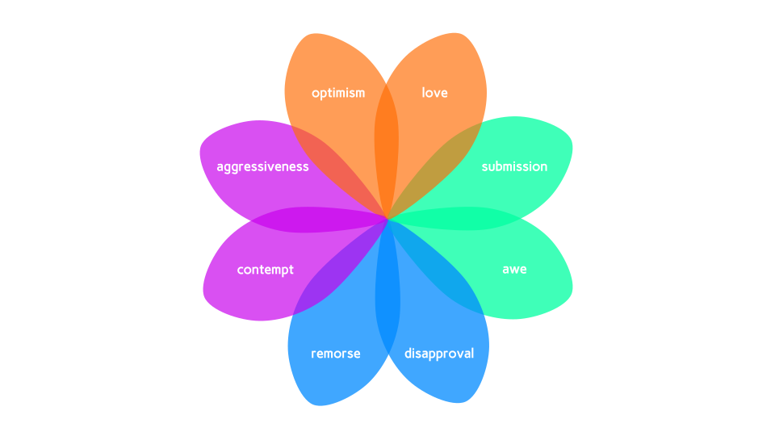
I don't think this flower arrangement was going to work, so I decided to revert back to the intersecting circles:
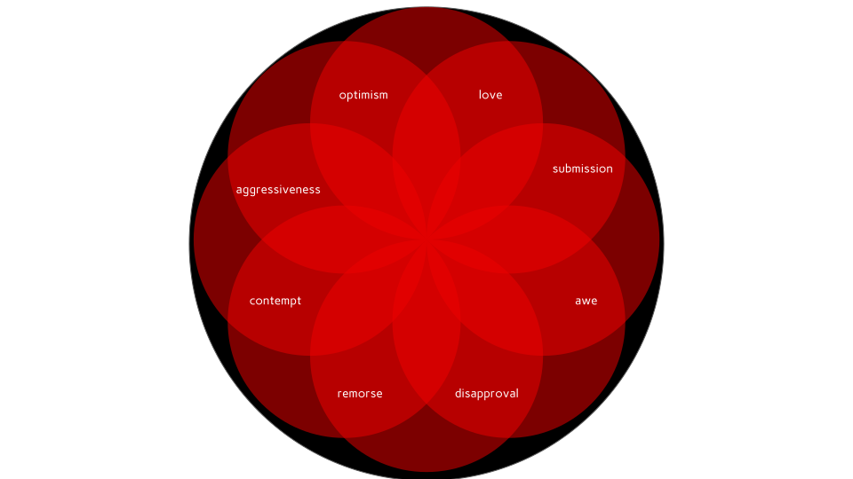
Oddly enough, this now felt less distracting than the seemingly simpler flowers above. I also liked the solid color throughout, since it was easier to read the text and focus on the emotions, instead of trying to comprehend what, if anything, the different colors were trying to communicate, even though I was digging the visual stimuli:
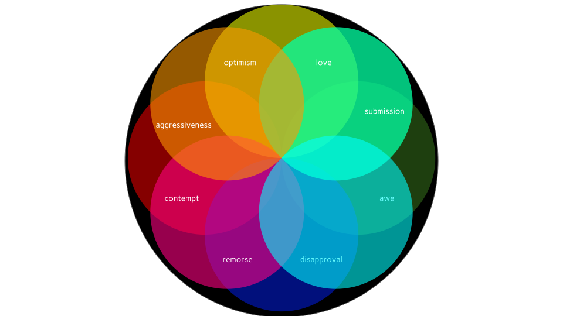
I played around with different color combinations, at this point just enjoying a small win after the nauseating sequence of clinical flowers:
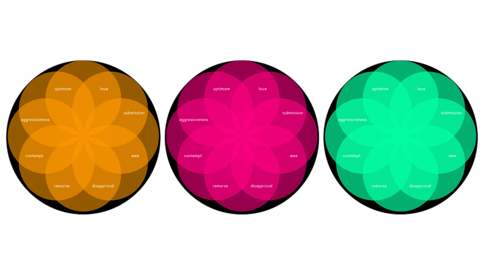
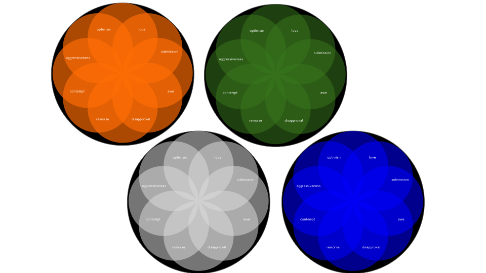
I was pretty pumped because they were pretty pretty! I did, however, want to give the flower petal idea one more try, but figured that I should use the shapes created by the intersecting circles. I couldn't easily or cleanly do that in Google Slides, but I found a fantastic free online vector graphics editor called vectr.
They have a feature where if you select two intersecting shapes, it allows you to perform set operations on them to create resulting union/difference/intersection shapes. I mocked up some "views" showing the logic that would be followed (i.e. only adjacent petals can be selected together):
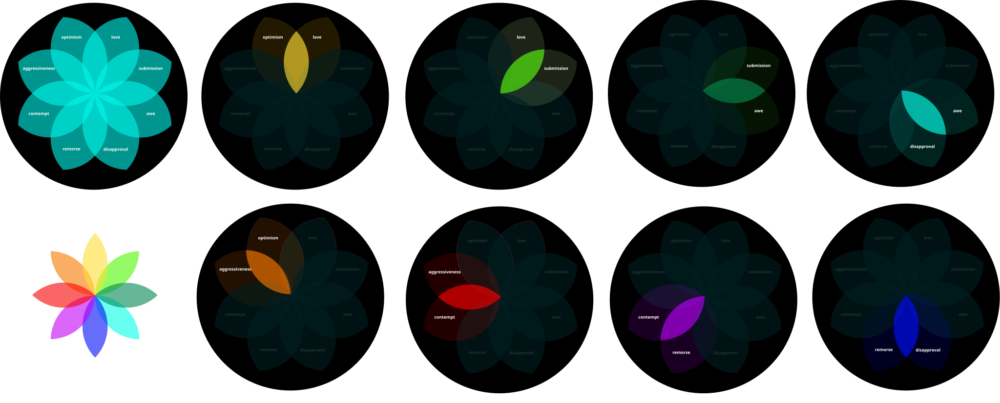
I was more pumped! This process was helping me visualize the different css changes that would result due to the selection/deselection of each element:
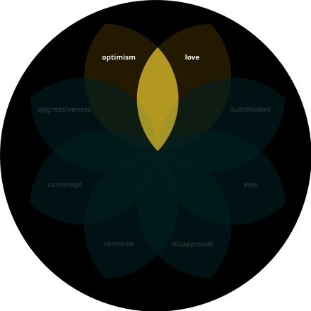
Implementing the visuals into the app
I was able to implement the basic functionality of what I envisioned into my app, largely due to the awesome nature of SVGs (i.e. the file's source code is already in html, the viewBox is a powerful attribute, and vectors are super clean)
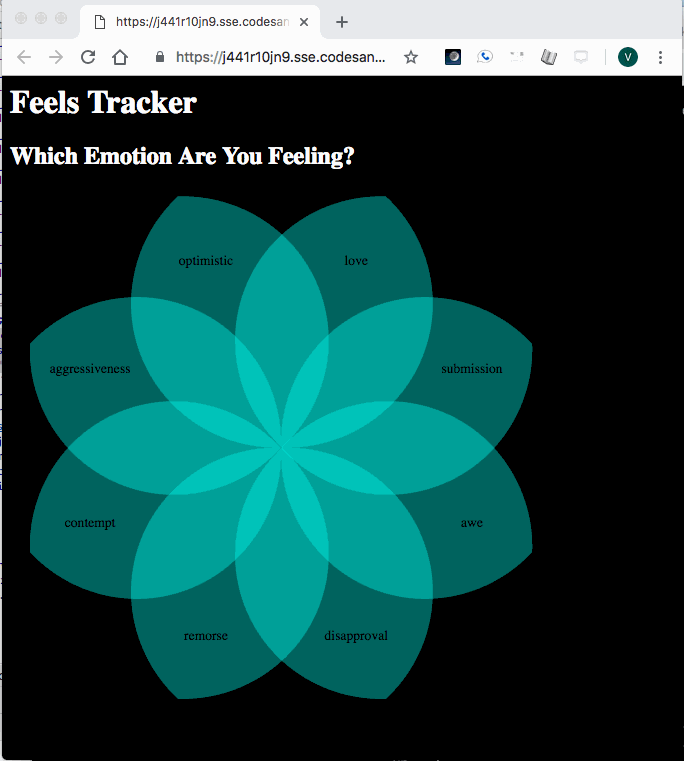
Only adjacent petals could be selected together, and once they were, the intersecting emotion "petal" was activated. The +/- you see on the 12 o'clock red petal after the first selections is just a thought at this point, of how I can allow the user to filter through diffrent intensities of the given emotion.
Domain Driven Development: a term I have heard before
After some re-reading of wiki articles, it turns out that I had grossly misunderstood the relationships between the different emotions and regions in Plutchik's Wheel and that will essentially nullify the above executed logic. Essentially, what I understood to be the "parent" and "child" emotions were actually inverse, and thus it wouldn't look like the arrangement I have above. Nevertheless, I'm going to go ahead and complete what I have started for this version, for time's sake, and leave the re-design of the wheel for the six-week version.
On to week three...